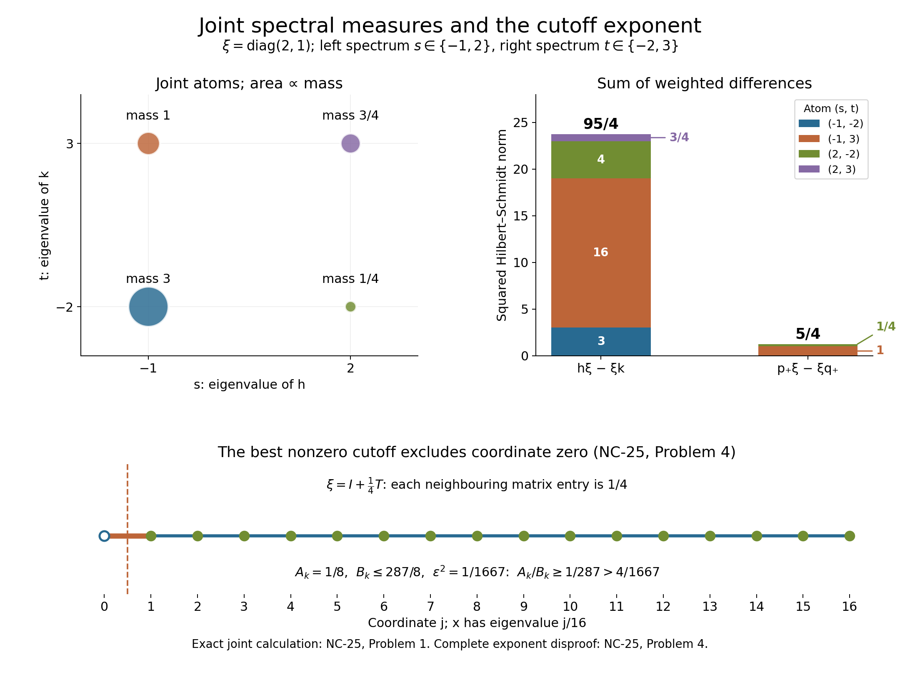

Joint spectral measures and commutator estimates in standard form
Self-checked by the writing AI. The five main results develop the joint left/right spectral calculus, a predual commutator estimate, polar spectral truncation, a nonzero controlled truncation, and a modular-time displacement bound. Their mathematical antecedents are Takesaki, Theory of Operator Algebras II, IX.1.20–1.24, printed pp. 156–161. NC-20–23 hold for arbitrary standard forms \((M,H,J,P)\) and normal positive functionals; NC-24 alone assumes faithfulness. No separability or countability hypothesis is added. The October 2026 explanatory additions, sharper selection proof, solved problems and original figure are by GPT-6.1 Sol (OpenAI), Ultra effort, under CC0-1.0; prior original prose is also CC0-1.0.
We use the standard-form contract established by OA-MOD-SF-05–11 and OA-MOD-SE-10–11: \(J M J=M'\), \(J\xi=\xi\) for \(\xi\in P\), and every \(\phi\in M_*^+\) has its unique \(\xi_\phi\in P\) satisfying \(\phi(a)=\langle a\xi_\phi,\xi_\phi\rangle\). The inner product is linear in the first entry. For \(a\in M\), the right action is
\[ \eta a=J a^*J\eta, \qquad [a,\eta]=a\eta-\eta a. \tag{NC.1} \]It is an action by the opposite algebra and commutes with the left action. All operators in the next three sections are bounded; all integrals of nonnegative functions are ordinary Lebesgue integrals and permit Tonelli without a countability assumption on \(H\).
The joint left/right spectral measure
Write \(\xi=\xi_\phi\) in this section.
Theorem. Let \(h,k\in M\) be self-adjoint and \(\phi\in M_*^+\). There is a unique finite Radon measure \(\mu_{h,k,\phi}\) supported on the joint compact spectrum of left \(h\) and right \(k\) in \(\mathbb R^2\), with mass \(\phi(1)\), writing \(\mu=\mu_{h,k,\phi}\), such that for every bounded Borel \(f,g:\mathbb R\to\mathbb C\),
\[ \begin{aligned} &\|f(h)\xi-\xi g(k)\|^2\\ &=\int_{\mathbb R^2}|f(s)-g(t)|^2\,d\mu(s,t). \end{aligned} \tag{NC.2} \]Proof. Put \(L_h\eta=h\eta\) and \(R_k\eta=\eta k=JkJ\eta\). These are commuting bounded self-adjoint operators. The operator \(T=L_h+iR_k\) is bounded normal, so OA-MOD-SK-04 supplies its bounded Borel spectral measure \(F\) on the compact metric set \(K=\operatorname{sp}(T)\subset\mathbb C\). Push \(F\) through \(z\mapsto(\operatorname{Re}z,\operatorname{Im}z)\) to get a projection-valued measure \(E\) on \(\mathbb R^2\). Continuous calculus identifies \(L_h=\operatorname{Re}T\) and \(R_k=\operatorname{Im}T\); uniqueness of SK-04's bounded Borel extension identifies their individual Borel calculi with the corresponding coordinate functions of \(E\). Its compact support lies in \(\operatorname{sp}(L_h)\times\operatorname{sp}(R_k)\). Define \(\mu(B)=\langle E(B)\xi,\xi\rangle=\|E(B)\xi\|^2\). Regularity can be checked on the single cyclic space generated by \(\xi\): SK-02 represents \(b\mapsto\langle b(T)\xi,\xi\rangle\), for \(b\in C(K)\), by a finite regular Borel measure on \(K\). SK-04's uniqueness makes its Borel extension agree with the restriction of \(F\) to this reducing cyclic space. The map from \(K\) to its compact image in \(\mathbb R^2\) is a homeomorphism, so its pushforward is finite and regular, hence Radon. No countable cyclic decomposition of all of \(H\) is required. Its total mass is \(\|\xi\|^2=\phi(1)\). Joint Borel functional calculus gives \(f(L_h)-g(R_k)=\int(f(s)-g(t))\,dE(s,t)\), whence (NC.2). Conversely, taking \((f,g)=(1_A,0),(0,1_B),(1_A,1_B)\) in (NC.2) determines both marginals and then \(\mu(A\times B)\) for every Borel rectangle; hence the measure is unique. The equality \(g(R_k)\eta=\eta g(k)\) follows first for polynomials, then for bounded Borel functions by spectral calculus; the adjoint in (NC.1) compensates for the anti-linearity of \(J\). This argument also covers \(\phi=0\), with zero measure. \(\square\)
Reference correction. Takesaki II (2003), IX.1.20, printed p. 156, display (24), omits the square on the absolute value in its integrand. The squared norm requires \(|f(s)-g(t)|^2\), as in (NC.2) and in the joint Borel identity on the following page. For a nonzero \(\phi\), the tests \((f,g)=(1,0)\) and \((2,0)\) give respectively \(\phi(1)\) and \(4\phi(1)\); the unsquared formula would give \(\phi(1)\) and \(2\phi(1)\). Thus the correction is forced already by constant functions.
The marginals are the spectral measures of \(h\) and of the right \(k\) at \(\xi\). In particular, for \(h=k\),
\[ \begin{gathered} \int |s-t|^2d\mu=\|[h,\xi]\|^2,\\ \int s^2d\mu=\|h\xi\|^2,\\ \int t^2d\mu=\|\xi h\|^2,\\ \|h\xi\|^2=\|\xi h\|^2=\phi(h^2). \end{gathered} \tag{NC.3} \]The last equality uses \(J\xi=\xi\), so \(\xi h=J(h\xi)\).
From a vector commutator to a predual commutator
Define \([x,\phi]\in M_*\) by \([x,\phi](y)=\phi(yx-xy)\). Then for every \(x\in M\) and \(\phi\in M_*^+\),
\[ \|[x,\phi]\|\le 2\phi(1)^{1/2}\|[x,\xi_\phi]\|. \tag{NC.4} \]Proof. Write \(\xi=\xi_\phi\). For \(y\in M\), insert the commuting right action:
\[ \begin{aligned} {}[x,\phi](y) &=\langle y(x\xi-\xi x),\xi\rangle +\langle y(\xi x)-xy\xi,\xi\rangle\\ &=\langle y[x,\xi],\xi\rangle -\langle y\xi,[x^*,\xi]\rangle . \end{aligned} \tag{NC.5} \]In the second line, \(y(\xi x)=(y\xi)x\) and the adjoint of right multiplication by \(x\) is right multiplication by \(x^*\). Antiunitarity and \(J\xi=\xi\) give \(J[x^*,\xi]=-[x,\xi]\). Thus the two terms in (NC.5) have absolute value at most \(\|y\|\|\xi\|\|[x,\xi]\|\) each. Supremizing over \(\|y\|\le1\) proves (NC.4), including \(\phi=0\). \(\square\)
Layer-cake polar truncation, with an explicit sharper constant
For \(x=u|x|\) its polar decomposition in \(M\), define
\[ E_a=1_{[a,\infty)},\qquad v_a(x)=uE_a(|x|),\qquad a>0. \tag{NC.6} \]Each \(v_a(x)\) is a partial isometry (possibly zero). The map \(a\mapsto v_{\sqrt a}(x)\xi\) is strongly Borel for every fixed \(\xi\), because the spectral family \(E_a=1_{[a,\infty)}\) is left-continuous in the strong topology as \(a\) increases. For arbitrary \(x\in M\) and \(\phi\in M_*^+\),
\[ \int_0^\infty \phi(E_{\sqrt a}(|x|))\,da=\phi(x^*x), \tag{NC.7} \]and
\[ \int_0^\infty\|[v_{\sqrt a}(x),\xi_\phi]\|^2da \le \sqrt2\,\|[x,\xi_\phi]\|\,\phi(x^*x+xx^*)^{1/2}. \tag{NC.8} \]In particular (NC.8) implies the constant-\(4\) estimate stated in Takesaki II, IX.1.22(ii). The improvement is a scalar calculation below, not a claim about an optimal constant.
Proof of (NC.7). The spectral theorem and scalar identity \(r=\int_0^\infty 1_{[a,\infty)}(r)\,da\) for \(r\ge0\) give \(x^*x=\int_0^{\|x\|^2}E_a(x^*x)\,da\) as a norm-convergent positive operator integral: its scalar spectral multiplier differs from \(r\) by at most the mesh in finite step approximations. Since \(E_a(x^*x)=E_{\sqrt a}(|x|)\) for \(a>0\), applying the bounded normal functional \(\phi\) and monotone/Tonelli convergence proves (NC.7). The value at \(a=0\) is immaterial. \(\square\)
Proof of (NC.8) for a self-adjoint operator. Let \(h=h^*\), \(\xi=\xi_\phi\), and use \(\mu_{h,h,\phi}\) from NC-20. Its polar truncation is \(F_a(h)\), with \(F_a(s)=\operatorname{sgn}(s)1_{\{|s|^2\ge a\}}\). For real \(s,t\), put \(I(s,t)=\int_0^\infty|F_a(s)-F_a(t)|^2da\). If \(st\ge0\), including a zero endpoint, \(I(s,t)=|s^2-t^2|=|s-t|(|s|+|t|)\). If \(st<0\), set \(m=\max(|s|,|t|)\), \(n=\min(|s|,|t|)\). The integrand is \(4\) on \((0,n^2)\), \(1\) on \((n^2,m^2)\), and zero above \(m^2\); hence
\[ I(s,t)=m^2+3n^2\le(m+n)^2=|s-t|(|s|+|t|), \tag{NC.9} \]since \(n\le m\). Joint spectral calculus, Tonelli, Cauchy–Schwarz, and (NC.3) now give
\[ \begin{aligned} \int_0^\infty\|[v_{\sqrt a}(h),\xi]\|^2da &=\int I(s,t)d\mu(s,t)\\ &\le\left(\int|s-t|^2d\mu\right)^{1/2} \left(\int(|s|+|t|)^2d\mu\right)^{1/2}\\ &\le 2\|[h,\xi]\|\phi(h^2)^{1/2}. \end{aligned} \tag{NC.10} \]This requires neither a faithful \(\phi\) nor a trace. \(\square\)
Reduction of a general \(x\) without a matrix-cone theorem. On \(\widetilde H=M_2(H)\), with sum-of-entries Hilbert norm, let \(M_2(M)\) act by left matrix multiplication and by the commuting right matrix action. Define \(\widetilde J([\eta_{ij}])=[J\eta_{ji}]\). Direct multiplication verifies \(\widetilde J^2=1\) and that the right action is \(A\mapsto\widetilde J A^*\widetilde J\). Put
\[ \widetilde x=\begin{pmatrix}0&x^*\\x&0\end{pmatrix}, \qquad \widetilde\xi=\begin{pmatrix}\xi&0\\0&\xi\end{pmatrix}. \tag{NC.11} \]The vector \(\widetilde\xi\) is \(\widetilde J\)-fixed and represents the bounded positive functional \(\widetilde\phi=\operatorname{Tr}_2\otimes\phi\). These facts are enough for the self-adjoint proof; no claim about the full natural cone of \(M_2(M)\) is used. Direct polar and commutator calculations yield
\[ v_{\sqrt a}(\widetilde x) =\begin{pmatrix}0&v_{\sqrt a}(x)^*\\v_{\sqrt a}(x)&0\end{pmatrix}, \quad \|[v_{\sqrt a}(\widetilde x),\widetilde\xi]\|^2 =2\|[v_{\sqrt a}(x),\xi]\|^2, \tag{NC.12} \]and \(\|[\widetilde x,\widetilde\xi]\|=\sqrt2\|[x,\xi]\|\), \(\widetilde\phi(\widetilde x^2)=\phi(x^*x+xx^*)\). Repeat the proof of (NC.10) for \((\widetilde x,\widetilde\xi)\): the joint measure comes from SK-04 applied to the two commuting matrix actions, \(\widetilde J\widetilde\xi=\widetilde\xi\) gives equality of the left and right second moments, and the scalar bound (NC.9) is unchanged. Thus its conclusion holds in this verified matrix representation without invoking a matrix natural-cone theorem. Divide that conclusion by \(2\) to obtain (NC.8). \(\square\)
A nonzero truncation with controlled commutator
Suppose \(x\ne0\), \(\phi\in M_*^+\), and \(\varepsilon>0\) satisfy
\[ \begin{gathered} S=\phi(x^*x+xx^*),\\ \|[x,\xi_\phi]\|\le\varepsilon S^{1/2}. \end{gathered} \tag{NC.13} \]Write \(w_a=v_{\sqrt a}(x)\) and \(m_a=\phi(w_a^*w_a+w_aw_a^*)\). Then some \(a>0\) satisfies \(w_a\ne0\) and
\[ \|[w_a,\xi_\phi]\| \le \sqrt[4]{2}\sqrt\varepsilon\,m_a^{1/2}. \tag{NC.14} \]Proof. Let \(A(a)=\|[w_a,\xi_\phi]\|^2\) and \(B(a)=m_a\). Polar calculus and (NC.7), applied to both \(x\) and \(x^*\), give \(\int_0^\infty B(a)da=S<\infty\). Retaining the sharper constant in (NC.8) and using (NC.13) gives \(\int_0^\infty A(a)da\le\sqrt2\,\varepsilon S=\sqrt2\,\varepsilon\int_0^\infty B(a)da\). Both functions vanish for \(a>\|x\|^2\), whereas \(v_{\sqrt a}(x)\ne0\) for every \(0<a<\|x\|^2\). If \(A(a)>\sqrt2\,\varepsilon B(a)\) at every such \(a\), the nonnegative measurable difference would have strictly positive integral on an interval of positive length, a contradiction. Select an \(a\) with \(A(a)\le\sqrt2\,\varepsilon B(a)\) and take square roots. This also covers \(S=0\) and \(\phi=0\): then \(A=0\) almost everywhere on the interval, so the selection still yields a nonzero truncation. \(\square\)
The original selection conclusion \(2\sqrt\varepsilon\) follows since \(\sqrt[4]{2}<2\). This is a consequence of the already proved cutoff estimate, with no claim of optimality or novelty. In Takesaki's Corollary IX.1.23, printed p. 160, the statement displays \(2\varepsilon\), whereas the proof concludes with \(2\sqrt\varepsilon\) on p. 161. The latter is the source conclusion justified by its averaging argument and the one compared here; the literal statement and the proof's conclusion are recorded separately. NC-25, Problem 4, disproves the literal exponent with a complete faithful matrix example.
Modular time displacement from one commutator
Let \(\phi\in M_*^+\) be faithful and \(\xi=\xi_\phi\). SE-11's support formula makes \(\xi\) cyclic and separating; SE-06 identifies its full-support corner with the faithful finite GNS form, and SE-05 identifies the given \(J\) with this vector's modular conjugation, including the closed Tomita graph. Hence the Tomita operator from \(M\xi\) has modular operator \(\Delta_\phi\), with \(\Delta_\phi\xi=\xi\). For all \(x\in M\), \(t\in\mathbb R\),
\[ \|(\Delta_\phi^{it}-1)x\xi\| \le 4(1+|t|)\|[x,\xi]\|. \tag{NC.15} \]Thus the source's unspecified universal constant can be taken as \(4\).
Proof. On the exact Tomita domain \(M\xi\), \(S_\phi x\xi=x^*\xi=J\Delta_\phi^{1/2}x\xi\). Because \(J\xi=\xi\), this implies
\[ \Delta_\phi^{1/2}x\xi=Jx^*\xi=\xi x, \qquad (1-\Delta_\phi^{1/2})x\xi=[x,\xi]. \tag{NC.16} \]The vector \(x\xi\) therefore lies in the required square-root domain; no formal manipulation of unbounded powers is needed. For \(s\in\mathbb R\),
\[ |e^{its}-1|\le4(1+|t|)|e^{s/2}-1|. \tag{NC.17} \]Indeed, if \(|s|\le2\), the denominator is at least \(|s|/4\), while the numerator is at most \(|t||s|\). If \(|s|>2\), the denominator is at least \(1-e^{-1}>1/2\), while the numerator is at most \(2\). The case \(s=0\) is immediate. The spectrum of \(\Delta_\phi\) is contained in \([0,\infty)\) and has no kernel. Apply (NC.17) with \(s=\log\lambda\) under its spectral measure at \(x\xi\), use (NC.16), and take square roots to obtain (NC.15). \(\square\)
Four matrix problems with complete solutions
For Problems 1–3, use \(M=M_2(\mathbb C)\) in its Hilbert–Schmidt standard form: \(H=M_2(\mathbb C)\), \(\langle A,B\rangle=\operatorname{Tr}(AB^*)\), \(JA=A^*\), and \(P\) is the positive matrices. The right action is ordinary right multiplication. The vector \(\xi=d^{1/2}\) represents \(\phi(x)=\operatorname{Tr}(dx)\). Positivity and self-duality follow by diagonalizing a self-adjoint matrix and testing rank-one projections; left and right matrix units give each other's commutants. Thus this model satisfies the standard-form axioms directly.
Problem 1: noncommuting operators, commuting actions. Set
\[ \begin{gathered} \xi=\begin{pmatrix}2&0\\0&1\end{pmatrix},\\ h=\begin{pmatrix}-1&0\\0&2\end{pmatrix},\\ u=\begin{pmatrix}\sqrt3/2&-1/2\\1/2&\sqrt3/2\end{pmatrix},\\ k=u\begin{pmatrix}-2&0\\0&3\end{pmatrix}u^*. \end{gathered} \tag{NC.18} \]Compute the joint measure, both marginals, \(\|h\xi-\xi k\|^2\), and the same norm with both operators replaced by their positive spectral projections. Explain why the measure need not be a product.
Solution. Let \(p_i\) be the two spectral projections of \(h\), and \(q_j\) those of \(k\), in the displayed eigenvalue order. The joint projection at \((s_i,t_j)\) sends \(A\) to \(p_iAq_j\). If \(e_i\) and \(f_j=ue_j\) are the corresponding unit eigenvectors, its mass is \(\|p_i\xi q_j\|_{\rm HS}^2=|e_i^*\xi f_j|^2\). Therefore
\[ \begin{array}{c|cc} &t=-2&t=3\\\hline s=-1&3&1\\ s=2&1/4&3/4 \end{array} \tag{NC.19} \]The row sums \((4,1)\) and column sums \((13/4,7/4)\) give the two marginals, of total mass \(\phi(1)=5\). A product of these marginals normalized to mass five would assign \(13/5\) to \((-1,-2)\), whereas the actual mass is \(3\). Thus independence is absent. Although \(h\) and \(k\) do not commute as matrices, left \(h\) always commutes with right \(k\).
Put \(p_+=1_{[0,\infty)}(h)\) and \(q_+=1_{[0,\infty)}(k)\). The weighted squared coordinate differences give
\[ \begin{aligned} \|h\xi-\xi k\|_{\rm HS}^2&=95/4,\\ \|p_+\xi-\xi q_+\|_{\rm HS}^2&=5/4. \end{aligned} \tag{NC.20} \]The first sum is \(3+16+4+3/4\). For the second identity only points where the two coordinates have different signs contribute. Every value in the figure is the exact finite sum in this solution.
Problem 2: the factor two in the predual estimate. Let \(\xi=\operatorname{diag}(a,b)\), with \(a,b>0\), and let \(x\) exchange the two basis vectors. Show that no constant smaller than two works in (NC.4) uniformly over positive normal functionals.
Solution. Direct multiplication gives
\[ \begin{gathered} \|[x,\xi]\|_{\rm HS}=\sqrt2\,|a-b|,\\ \phi(1)=a^2+b^2,\\ \|[x,\phi]\|=2|a^2-b^2|. \end{gathered} \tag{NC.21} \]For the last equality, cyclicity of the trace writes the functional as \(y\mapsto\operatorname{Tr}((x d-d x)y)\). Its density has both singular values \(|a^2-b^2|\), so its dual norm is their sum. In finite dimensions this duality follows directly: a singular-value decomposition bounds the trace pairing by that sum for \(\|y\|\le1\), and the adjoint polar partial isometry attains the sum. For \(a\ne b\), the ratio of the left side of (NC.4) to \(\phi(1)^{1/2}\|[x,\xi]\|\) is
\[ \frac{\sqrt2(a+b)}{\sqrt{a^2+b^2}} \longrightarrow 2. \tag{NC.22} \]The limit is taken as \(a/b\to1\). Keep \(a\ne b\) along the limit; at equality both commutators vanish. This proves optimality of the uniform factor two in (NC.4), without asserting optimality for (NC.8) or (NC.14).
Problem 3: a nonzero truncation of zero functional mass. Take \(\xi=d=\operatorname{diag}(1,0)\) and \(x=\operatorname{diag}(0,1)\). Check NC-23 when \(S=\phi(x^*x+xx^*)=0\).
Solution. The operator \(x\) is nonzero, but \(x\xi=\xi x=0\). For every \(0<a\le1\), its truncation \(v_{\sqrt a}(x)=x\) is still nonzero and both \(A(a)\) and \(B(a)\) vanish. The hypothesis and conclusion of NC-23 hold with either side zero for every \(\varepsilon>0\). Dividing by \(S\) or by \(B(a)\) would destroy this valid case; the integral selection proof does neither.
Problem 4: the printed epsilon exponent. Disprove the literal \(2\varepsilon\) selection bound in Takesaki's Corollary IX.1.23, even with a faithful functional. Use the same Hilbert–Schmidt model on \(M_{17}(\mathbb C)\), indexed by \(j=0,\ldots,16\). Let \(T\) be the real symmetric matrix with ones just above and below the diagonal and zero elsewhere. Set
\[ \begin{gathered} \xi=I+\tfrac14 T,\\ x=\operatorname{diag}(0,1/16,\ldots,1),\\ d=\xi^2,\qquad\phi(y)=\operatorname{Tr}(dy). \end{gathered} \]Solution. For a vector \(z\), the sum of \(|z_jz_{j+1}|\) is at most \(\|z\|^2\), by \(2|uv|\le|u|^2+|v|^2\) and counting each interior coordinate twice. Thus \(|\langle Tz,z\rangle|\le2\|z\|^2\), and \(\xi\ge\tfrac12I\). In particular \(d\) defines a faithful positive normal functional, and \(\xi=d^{1/2}\) is its cone representative.
The diagonal entries of \(d\) are \(17/16\) at the two endpoints and \(9/8\) elsewhere. The commutator \([x,\xi]\) has exactly 32 nonzero entries, each of modulus \(1/64\). Since \(\sum_{j=0}^{16}j^2=1496\), direct summation gives
\[ \begin{gathered} \|[x,\xi]\|_{\rm HS}^2=1/128,\\ S=2\operatorname{Tr}(dx^2)=1667/128,\\ \varepsilon^2=1/1667. \end{gathered} \]Choosing the positive \(\varepsilon=1/\sqrt{1667}\) makes the hypothesis of NC-23 an equality.
For every \(a>0\) yielding a nonzero cutoff, \(v_{\sqrt a}(x)=p_k\) for some \(1\le k\le16\), where \(p_k\) projects onto the coordinates \(j\ge k\). Every such \(k\) occurs. The zero eigenvalue is excluded for every positive threshold, so the identity is never an available cutoff. Only the edge between \(k-1\) and \(k\) crosses this projection; the commutator has exactly two entries of modulus \(1/4\). Therefore
\[ \begin{gathered} A_k=\|[p_k,\xi]\|_{\rm HS}^2=1/8,\\ B_k=2\phi(p_k)=\tfrac94(17-k)-\tfrac18,\\ B_k\le B_1=287/8. \end{gathered} \]The literal source conclusion would require \(A_k/B_k\le4\varepsilon^2\). But every nonzero cutoff satisfies
\[ \frac{A_k}{B_k}\ge\frac1{287} >\frac4{1667}=4\varepsilon^2, \]because \(1667>4\cdot287=1148\). All possible nonzero cutoffs fail that printed conclusion. The square-root-epsilon conclusion in the source proof, and the sharper bound actually proved in NC-23, remain valid.

The upper left panel shows the four atoms of (NC.19); disk areas are proportional to their masses, and labels give the exact fractions. The upper right panel separates their contributions to (NC.20). The totals are \(95/4\) and \(5/4\); these are squared Hilbert–Schmidt norms, not operator norms. Original illustration and reproducible plotting source: GPT-6.1 Sol (OpenAI), Ultra effort, October 2026, CC0. The bottom panel shows the 17-coordinate path in Problem 4. Its red edge crosses the best cutoff, which excludes only coordinate zero; every higher cutoff keeps the same commutator mass and decreases the functional mass. The exact fraction comparison disproves the printed linear-epsilon estimate. Complete computations and standard-form conventions are above.
Functional calculus from the joint measure
Write \(\xi=\xi_\phi\) throughout these two problems. Put \(D=\|h\xi-\xi k\|\).
Problem 1: a scalar Lipschitz bound. Suppose \(h,k\) are bounded self-adjoint, and a Borel function \(f\) is Lipschitz with constant \(L\) on a compact interval containing both spectra. Prove
\[ \begin{aligned} &\|f(h)\xi-\xi f(k)\|\\ &\quad\le L\|h\xi-\xi k\|. \end{aligned} \tag{NC.23} \]Solution. Extend \(f\) boundedly off the interval; its values there have no effect on either calculus or on the compactly supported joint measure. Insert \(|f(s)-f(t)|^2\le L^2|s-t|^2\) into (NC.2) and take square roots. In particular \(h=k\) controls a vector commutator of \(f(h)\). This is a norm estimate for the specified vector and its joint measure; no assertion about operator-norm Lipschitz continuity of the functional calculus is needed.
Problem 2: the square root at a zero endpoint. For positive bounded \(h,k\), prove the estimate
\[ \begin{aligned} &\|h^{1/2}\xi-\xi k^{1/2}\|^2\\ &\quad\le \phi(1)^{1/2}\|h\xi-\xi k\|. \end{aligned} \tag{NC.24} \]Explain why a uniform Lipschitz estimate cannot replace it near zero, even for the scalar algebra.
Solution. For \(s,t\ge0\), \((\sqrt s-\sqrt t)^2\le|s-t|\): if \(s\ge t\), multiply \(\sqrt s-\sqrt t\) by \(\sqrt s+\sqrt t\), which is no smaller than its first factor. Interchange \(s,t\) for the other case. Equation (NC.2), followed by scalar Cauchy–Schwarz and the mass formula, now gives
\[ \begin{aligned} &\|h^{1/2}\xi-\xi k^{1/2}\|^2\\ &\quad\le\int |s-t|\,d\mu\\ &\quad\le\phi(1)^{1/2}D. \end{aligned} \tag{NC.25} \]Here (NC.2) identifies \(\int|s-t|^2d\mu=D^2\), while \(\mu(\mathbb R^2)=\phi(1)\). Neither faithfulness nor invertibility is used, and \(\phi=0\) is included. In \(M=\mathbb C\) with \(\phi(1)=1\), choose \(h=0\), \(k=\delta\), \(0<\delta\le1\). The vector difference is \(\sqrt\delta\), while the unsquared base difference is \(\delta\). No finite uniform \(L\) can satisfy \(\sqrt\delta\le L\delta\) for all such \(\delta\). More generally no exponent larger than \(1/2\) gives a uniform bound by a constant times \(\delta\) to that exponent. The half exponent after taking the square root of (NC.24) is therefore necessary at this endpoint. This elementary weighted estimate does not claim the full two-density Powers–Størmer inequality.
Exact boundary and dependencies
The five numbered source statements IX.1.20–1.24 have original proofs here relative to: the abstract standard-form and positive-vector contracts SF/SE, SK-04's bounded-normal Borel calculus (which supplies the joint measure through \(L_h+iR_k\)), BK-07's bounded polar decomposition, and SE-05/06's exact Tomita conjugation for the faithful vector in NC-24. SK's scalar-measure and continuous-calculus dependencies remain transitive inputs. NC-22 and NC-23 are stronger at their displayed constants, but claim no optimality for them. NC-25 proves the uniform sharpness of NC-21 and checks nonfaithful truncation. NC-26 gives complete scalar functional-calculus applications of NC-20. NC-23 retains the source's nonzero partial isometry even when the positive functional vanishes on \(x^*x+xx^*\).
This unit does not establish IX.1.19's relative-modular strong-resolvent theorem, the IX.1 exercises, or any later Chapter XVIII application. Those topics retain their own hypotheses and proof obligations.
For further reading on the Hilbert–Schmidt model and the two commuting actions, see Klaas Landsman, The Okinawa Lectures on Entropy, arXiv:2608.14523v1 (14 August 2026), Section 18, equations (18.1)–(18.9). Those notes use the conjugate inner-product convention and a standing separability assumption. Our finite-matrix solutions are written and proved here in the linear-first convention; the general commutator proofs retain arbitrary Hilbert-space dimension. This is an external reading citation, with no imported proof or copied text. Read the lectures.